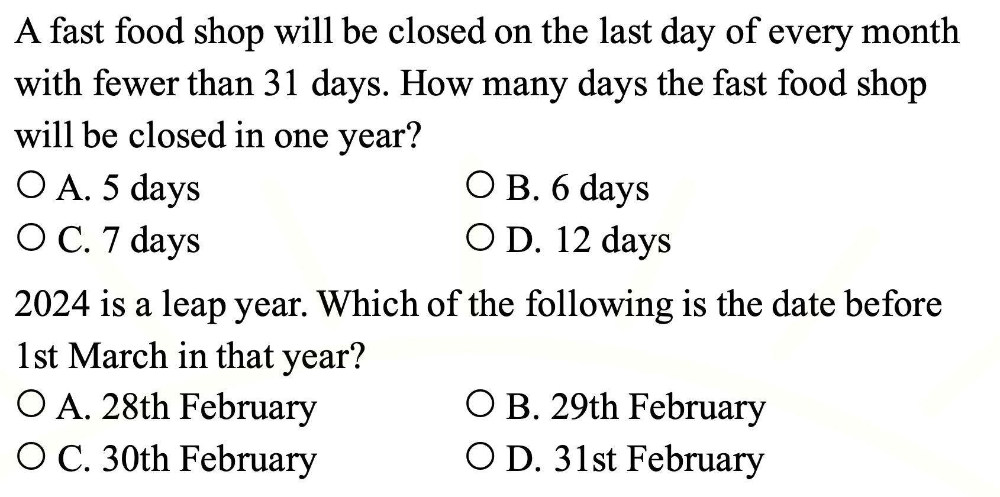

填空题：Mrs Wong is a bus ___ . She takes people to different places.
Answer:
已掌握
| # | 中文意思 | 例句/提示 | 英文默写 | 已掌握 |
|---|---|---|---|---|
| noun 名词 | ||||
| 1 | 野餐 | We have a in the park. | ||
| 2 | 窗户 | Open the , please. | ||
| 3 | 清洁工人 | The works every day. | ||
| 4 | 分钟 | Please wait a . | ||
| 5 | 周六 | I can use in class. | ||
| 6 | 活动 | This is fun. | ||
| 7 | 小学生 | The reads a book. | ||
| 8 | 售货员 | I can use in class. | ||
| verb 动词 | ||||
| 9 | 感觉 | I happy today. | ||
| preposition 介词 | ||||
| 10 | 在……之后；在……后面 | The cat is the box. | ||
| phrase 短语 | ||||
| 11 | 数学计算 | We in math class. | ||
| adjective 形容词 | ||||
| 12 | 不爱干净的 | I can use in class. | ||
| 13 | 漂亮的 | The flower is . | ||
| verb/noun 动词/名词 | ||||
| 14 | 旅行 | We during the holiday. | ||
| 15 | 改变，找零 | I can my answer. | ||
| uncategorized 未分类 | ||||
| 16 | 收到 | I can use in class. | ||
| 17 | 遮盖 | I can use in class. | ||
| 18 | 相信 | I can use in class. | ||
| 19 | 折叠 | I can use in class. | ||
| 20 | 铁路 | I can use in class. | ||
| # | 单词/词组 | 中文意思 | 例句/说明 | 已掌握 |
|---|---|---|---|---|
| adjective 形容词 | ||||
| 1 | dangerous | The road is dangerous. | ||
| 2 | different | I can use different in class. | ||
| noun 名词 | ||||
| 3 | word | Please write fifty words. | ||
| 4 | riddle | I can solve the riddle. | ||
| 5 | pronoun | He is a pronoun. | ||
| 6 | fin | A fish has a fin. | ||
| 7 | character | The story has many characters. | ||
| 8 | genie | The genie grants a wish. | ||
| 9 | blog | I can use blog in class. | ||
| 10 | pond | There is a small pond in the park. | ||
| 11 | badminton | I play badminton with my friend. | ||
| 12 | fable | The fable has a lesson. | ||
| 13 | shape | A circle is a shape. | ||
| 14 | piece | I want one piece of paper. | ||
| 15 | musician | The musician plays music. | ||
| 16 | timetable | The timetable shows my classes. | ||
| 17 | picnic | We have a picnic in the park. | ||
| phrase 短语 | ||||
| 18 | ice lollies | I can use ice lollies in class. | ||
| adjective/noun 形容词/名词 | ||||
| 19 | round | The ball is round. | ||
| uncategorized 未分类 | ||||
| 20 | corresponding | I can use corresponding in class. | ||
| 21 | suitable | I can use suitable in class. | ||
| 22 | phrases | I can use phrases in class. | ||
| 23 | spelling | I can use spelling in class. | ||
| 24 | thief | I can use thief in class. | ||
| 25 | organic | I can use organic in class. | ||
| 26 | farming | I can use farming in class. | ||
| 27 | plain | I can use plain in class. | ||
| 28 | bingo | I can use bingo in class. | ||
| 29 | illustrate | I can use illustrate in class. | ||
| 30 | lantern | I can use lantern in class. | ||
| # | 中文意思 | 例句/提示 | 英文默写 | 已掌握 |
|---|---|---|---|---|
| time/date 时间日期 | ||||
| 1 | 二月 | is the second month. | ||
| 2 | 九月 | is the ninth month. | ||
| 3 | 星期二 | is a weekday. | ||
| 4 | 星期四 | is a weekday. | ||
| 5 | 星期六 | is a weekend day. | ||
| time unit 时间单位 | ||||
| 6 | 月 | A has many days. | ||
| 7 | 分 | A has 60 seconds. | ||
| numbers 数字 | ||||
| 8 | 7 | is 7. | ||
| 9 | 17 | is 17. | ||
| 10 | 40 | is 40. | ||
| 11 | 90 | is 90. | ||
| 12 | 百 | One is 100. | ||
| solid shape 立体图形 | ||||
| 13 | 三棱柱 | A has triangular faces. | ||
| 14 | 五棱锥 | A has pentagonal faces. | ||
| 15 | 球 | A is round. | ||
| # | 单词/词组 | 中文意思 | 例句/说明 | 已掌握 |
|---|---|---|---|---|
| numbers 数字 | ||||
| 1 | 3-digit number | A 3-digit number has three digits. | ||
| operations 运算 | ||||
| 2 | total | Find the total number of apples. | ||
| 3 | altogether | How many are there altogether? | ||
| geometry 几何 | ||||
| 4 | obtuse angle | An obtuse angle is larger than a right angle. | ||
| 5 | grid | A grid helps us find positions. | ||
| 6 | adjecent side | I can read adjecent side in a math question. | ||
| question word 题目词 | ||||
| 7 | compare | We compare two numbers. | ||
| 8 | calculate | Calculate the answer. | ||
| 9 | estimate | Estimate the answer first. | ||
| 10 | onwards | Count onwards from 20. | ||
| 11 | match | Match the number to the word. | ||
| 12 | respectively | Tom and Ben have 2 and 3 books respectively. | ||
| answer 答案 | ||||
| 13 | answer | Write the answer in the box. | ||
| comparison 比较 | ||||
| 14 | least | Which number is the least? | ||
| time/date 时间日期 | ||||
| 15 | leap year | A leap year has 366 days. | ||
| 16 | common year | I can read common year in a math question. | ||
| quantity 数量 | ||||
| 17 | pair | A pair means two things together. | ||
| position 位置 | ||||
| 18 | below | The box is below the table. | ||
| 19 | front | The door is at the front of the room. | ||
| 20 | above | The clock is above the board. | ||
| operations calculation 运算 | ||||
| 21 | A times B | A times B means multiplication. | ||
| 22 | dividend | The dividend is divided by the divisor. | ||
| 23 | remainder | The remainder is left after division. | ||
| 24 | divide A by B | Divide A by B. | ||
| teacher math vocabulary 老师数学词汇 | ||||
| 25 | each | I can read each in a math question. | ||
| currency money 货币 | ||||
| 26 | cent | One cent is a small amount of money. | ||
| measurement 测量 | ||||
| 27 | measure | We measure the length with a ruler. | ||
| 28 | distance | Find the distance between the two points. | ||
| 句型结构 | ||||
| 29 | Angle ... is larger than Angle ... | Angle A is larger than Angle B. | ||
| 30 | ... is to the north of ... | The playground is to the north of the hall. | ||

